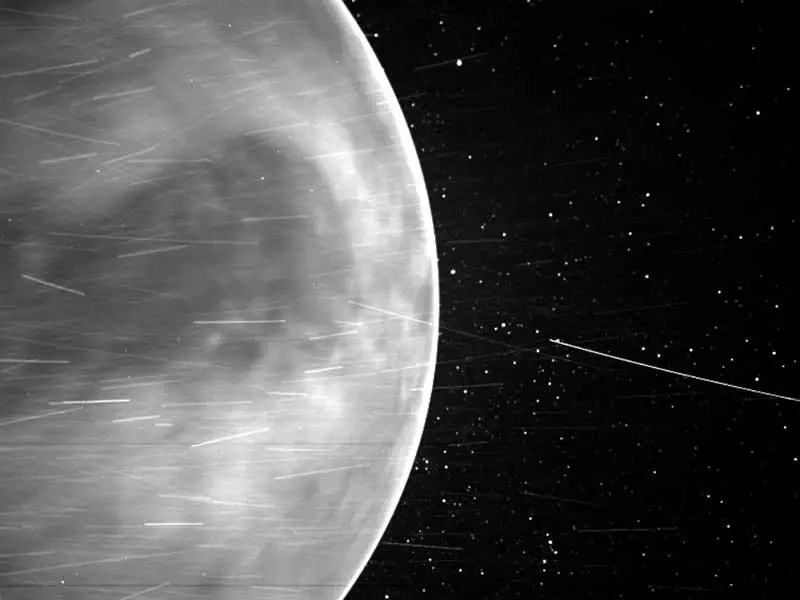

Fun Facts about Venus
- Venus's atmosphere is very thick and 90 times more massive than Earth's atmosphere. It is mostly carbon dioxide gas, with some nitrogen and small amount of water vapor.
- Venus's distance from the sun is 67,237,910 miles or 108,208,930 km.
- Venus spins backwards. It spins in the opposite direction that earth rotates. Venus: The Sun rises in the west and sets in the east. Earth: sun rises in the east and sets in the west.
- Venus is made up of a central iron core and a rocky mantle, similar to the composition of Earth.
- Venus have no moons, similar to Mercury. Only these two planets have no moons in our Solar system.
- On the surface, Venus's temperature can reach 864 degrees Fahrenheit (462 degrees Celsius), making Venus the hottest planet in the entire Solar System!

Could It Survive 465°C?
Pick something to send to the surface of Venus: